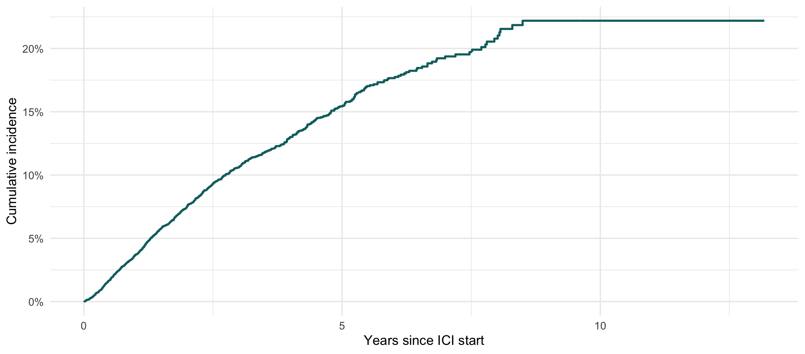

| Variable | As published | Recomputed (published logic) | Fixed: pre-ICI only | Within ±30d of ICI |
|---|---|---|---|---|
| ppi | 12638 | 12638 | 8637 | 3994 |
| ace_arb | 7430 | 7430 | 6179 | 2043 |
| diu | 9375 | 9375 | 6420 | 2249 |
| statins | 8208 | 8208 | 6865 | 2442 |
| Bevacizumab | 1273 | 1273 | 817 | 475 |
| Cisplatin | 2295 | 2295 | 2021 | 471 |
| Carboplatin | 5481 | 5481 | 4420 | 2261 |
| Pemetrexed | 2327 | 2327 | 1923 | 1197 |
| Gemcitabine | 2044 | 2044 | 1217 | 493 |
| Cetuximab | 421 | 421 | 170 | 49 |
| Trastuzumab | 454 | 454 | 252 | 166 |
| VEGF_TKI | 1246 | 1246 | 670 | 363 |
| steroids | 13157 | 13157 | 13157 | NA |
| htn | 10706 | 10706 | 10706 | NA |
| smoking | 8883 | 8883 | 6815 | NA |
| esrd_kt (in-cohort) | 0 | 0 | 1 | NA |
ICI → CKD — Revision
Bug register, corrected re-analysis, and reviewer-requested analyses
NoteAbout this page
This page is additive. The Analysis tab and the published dataset are untouched — nothing here overwrites a published number. Every figure that moves is shown as as-published vs corrected so the effect of each fix is visible.
Derivation runs locally (R/revision_build*.R, which read RPDR extracts that stay on this machine) and caches aggregates to cache/revision/ (gitignored). This page renders from that cache only: aggregate results, no patient-level row, cells below 11 suppressed.
1 Bug register
Four tiers. The tiering is the point: it separates this changed the paper from this looks alarming but changed nothing. Five suspected bugs were checked against the data and found not to affect any published number — they sit in Tier 2, and saying so is as important as flagging the three that did.
1.1 Tier 1 — defects that changed published results
| # | Bug | Where | Result it moved |
|---|---|---|---|
| 1 | med_list() applies its pre-index date guard only when excluded_names is supplied. Every call without it silently becomes “ever in the record”. |
Final cohort/Kavita final cohort 2026.Rmd:133, calls :706–734 |
Large. ppi 12,638 → 8,637; diu 9,375 → 6,420; statins 8,208 → 6,865; ace_arb 7,430 → 6,179; every chemo agent falls, so nephrotoxic_chemo (a covariate in every adjusted model) goes 8,580 (48.4%) → 6,940 (39.2%). See §1.5. |
| 2 | create_aki() applies filter(cre_date > index_date) before the rolling lookback windows are built, so the KDIGO comparators never see the pre-ICI baseline creatinine. |
Final cohort/aki.Rmd:82 |
AKI is undetectable at a patient’s first post-ICI draw. See §1.5 and §4. |
| 3 | smoking is ascertained with no date filter at all (same for chf). |
:921, :925 |
Post-ICI diagnoses leak into baseline: 8,883 → 6,815. smoking is a published model covariate. |
1.2 Tier 2 — latent fragilities that are not currently biting
Checked against the data and confirmed harmless today. They are worth hardening because each would fail silently if an upstream file changed.
| Issue | Why it looks wrong | What the data shows |
|---|---|---|
distinct(EMPI_MRN, .keep_all = TRUE) with no arrange(), and as.Date() applied after the dedup — so ICI_Dose_Date (study time zero) is whichever dose row the Excel export happened to put first. |
3,534 patients have >1 dose row, spread up to 4,258 days. | 0 of 25,397 patients get the wrong date — the export is already date-sorted. Harden with arrange() before distinct(); no published number changes. |
data_management.qmd:772 anchors post-baseline follow-up to the baseline lab date, not ICI_Dose_Date, which would let CKD events predate ICI. |
Baseline can sit up to 180 days pre-ICI. | The live pipeline anchors to ICI_Dose_Date correctly (:968). Verified: 0 of 1,151 outcome events predate ICI start. |
| Ledger row “25,397 ICI starts” sits above patient-level rows. | Looks like dose rows leaking into a patient ledger. | The file holds 29,664 dose rows and 25,397 patients — 25,397 is the patient count. The label is wrong, not the number. |
dia_list_icd() has its if/else branches inverted — when excluded_names is supplied it takes the branch that never uses it, so no_htn_list was silently discarded. |
htn is a covariate in every adjusted model, and the exclusion list exists to drop things like “chronic venous hypertension with ulcer”. |
0 patients affected. Only 19 of 160,927 qualifying pre-ICI rows match no_htn_list, and no patient’s only qualifying row is an excluded one — htn is 10,706 either way. A real defect that never bit. |
esrd_kt_codes contains Z49.0/.1/.2 — non-billable ICD-10 parents matching zero rows — and omits the billable Z49.31/Z49.32, which do have data. |
Affects both the baseline exclusion and the esrd_kt_after_ici outcome. |
1 patient in the analytic cohort would newly qualify. Worth fixing; changes nothing material. |
1.3 Tier 3 — the published Data Management tab misstates the analysis
data_management.qmd is rendered on this site but has eval: false and has never run. Its definitions have drifted from the code that actually built the data. None of this changed a result; it misdescribes one. The paper’s Methods are correct.
| Documented (wrong) | Actual (live), and what the paper says |
|---|---|
ckd_incidence: pct_drop > 0.30 |
pct_drop > 0.25 — matches the paper’s “>25% decline” |
ckd_progression: no decline requirement |
pct_drop > 0.30 & eGFR_CRE_baseline < 60 — matches the paper’s “≥30% decline … baseline <60” |
| Baseline = closest single CRE within 180 d | Baseline = median CRE within 90 d (pre_lab_median) |
med_list_window() gives chemo a ±30-day window |
No such function exists in the live pipeline |
1.4 A provenance gap in the published AKI variable
Re-deriving AKI with the published logic reproduces aki_0120.xlsx for 17,692 of 17,718 patients (99.85%). The remaining 26 are flagged in the published file but have no qualifying creatinine under that logic. Three candidate explanations were tested and ruled out:
| Hypothesis | Test | Result |
|---|---|---|
| The rewritten rolling-window function behaves differently | Compared against a literal transcription of aki.Rmd’s sapply on those patients |
0 of 1,237 rows differ — the logic is identical |
| The AKI file used different index dates | Compared ICI_Dose_Date across the 0101 and 0114 masters |
0 of 17,721 differ |
read.table(fill=TRUE, quote="") mis-parses the lab file (58% of lines contain #, and comment.char="#" is on by default) |
Read the 909 MB lab file both ways and compared | 0 of 1,190,135 creatinine rows differ |
What remains is file provenance: aki_0120.xlsx is dated 2026-01-20, but the aki.Rmd that produces it was last modified 2026-01-29. The committed code is not the code that generated the published AKI variable. The gap is 0.15% of the cohort and does not change any conclusion, but it means the published AKI column is not reproducible from the repository as it stands.
Everything on this page labelled as published uses aki_0120.xlsx itself, so the published figures are reported exactly as they appear in the paper.
1.5 Tier 4 — blocked the site build
analysis.qmd ended in a truncated second copy of section 12: a duplicate heading, a duplicate chunk label, and an unclosed ```{r} fence. _freeze was masking it; a clean render would have failed. Removed — it was a dangling fragment and deleted no output.
1.6 What actually moved
nephrotoxic_chemo under three ascertainment windows. This variable is a covariate in every adjusted model in the paper.
| Definition | N | % |
|---|---|---|
| as published (ever) | 8580 | 48.4 |
| pre-ICI only | 6940 | 39.2 |
| within +/-30d of ICI | 3596 | 20.3 |
| Definition | N with AKI | % |
|---|---|---|
| published file (aki_0120.xlsx) | 5100 | 28.8 |
| recomputed, published logic | 5074 | 28.6 |
| FIXED lookback | 5316 | 30.0 |
| Change | N |
|---|---|
| AKI under both | 4995 |
| newly detected by fix | 321 |
| lost by fix | 79 |
| never AKI | 12323 |
2 Corrected re-analysis
Everything below re-runs the published analysis on corrected data. Code is identical to analysis.qmd; only the inputs differ.
2.1 Table 1 — published vs corrected covariates
| Variable | As published | Corrected |
|---|---|---|
| ppi | 12638 (71.3%) | 8637 (48.7%) |
| ace_arb | 7430 (41.9%) | 6179 (34.9%) |
| diu | 9375 (52.9%) | 6420 (36.2%) |
| statins | 8208 (46.3%) | 6865 (38.7%) |
| smoking | 8883 (50.1%) | 6815 (38.5%) |
| htn | 10706 (60.4%) | 10706 (60.4%) |
| nephrotoxic_chemo | 8580 (48.4%) | 6940 (39.2%) |
2.2 Cause-specific Cox — published vs corrected covariates
| term | As published | Corrected |
|---|---|---|
| year_10 | 1.31 (1.23-1.39) | 1.32 (1.24-1.40) |
| male | 0.79 (0.70-0.90) | 0.79 (0.70-0.89) |
| dm | 1.37 (1.18-1.60) | 1.43 (1.23-1.67) |
| htn | 1.00 (0.87-1.16) | 1.09 (0.94-1.26) |
| cad | 0.99 (0.86-1.14) | 1.07 (0.92-1.24) |
| ppi | 1.29 (1.11-1.50) | 1.00 (0.88-1.14) |
| smoking | 1.18 (1.05-1.34) | 1.03 (0.91-1.18) |
| statins | 1.15 (1.00-1.31) | 0.98 (0.85-1.12) |
| eGFR_dec_10 | 1.14 (1.10-1.17) | 1.13 (1.10-1.17) |
| nephrotoxic_chemo | 1.08 (0.96-1.22) | 1.03 (0.91-1.18) |
| cirrhosis | 0.98 (0.63-1.51) | 1.00 (0.65-1.55) |
2.3 Cumulative incidence of the CKD composite

2.4 Fine–Gray subdistribution model
| term | As published | Corrected |
|---|---|---|
| year_10 | 1.16 (1.09-1.22) | 1.18 (1.12-1.25) |
| male | 0.77 (0.69-0.87) | 0.79 (0.70-0.90) |
| dm | 1.15 (0.98-1.34) | 1.27 (1.09-1.48) |
| htn | 0.95 (0.82-1.10) | 1.13 (0.97-1.31) |
| ppi | 1.25 (1.07-1.45) | 0.89 (0.78-1.01) |
| smoking | 1.21 (1.07-1.37) | 1.02 (0.90-1.16) |
| statins | 1.43 (1.24-1.64) | 1.05 (0.92-1.21) |
| eGFR_dec_10 | 1.14 (1.11-1.17) | 1.14 (1.11-1.17) |
| nephrotoxic_chemo | 0.90 (0.80-1.02) | 0.85 (0.75-0.97) |
2.5 Logistic regression — 5-year CKD composite
| term | As published | Corrected |
|---|---|---|
| year_10 | 1.48 (1.28-1.71) | 1.50 (1.30-1.75) |
| male | 0.62 (0.47-0.83) | 0.62 (0.46-0.82) |
| dm | 1.70 (1.14-2.51) | 1.78 (1.19-2.64) |
| htn | 1.05 (0.75-1.47) | 1.15 (0.83-1.61) |
| ppi | 1.45 (1.02-2.12) | 1.00 (0.74-1.34) |
| smoking | 1.38 (1.03-1.85) | 1.05 (0.78-1.41) |
| statins | 1.04 (0.76-1.44) | 0.91 (0.66-1.25) |
| eGFR_dec_10 | 1.18 (1.09-1.28) | 1.19 (1.10-1.28) |
| nephrotoxic_chemo | 1.17 (0.87-1.56) | 1.11 (0.80-1.52) |
3 Reviewer request 1 — a less strict CKD incidence definition
The reviewers asked for incident CKD defined as eGFR < 60 sustained ≥ 90 days, dropping the >25% relative-decline requirement. ckd_progression and kidney failure are unchanged.
ImportantThe sustain engine also had to change
The published engine measures a non-terminal episode as the gap until the next non-qualifying value, so a single low eGFR followed 90+ days later by a recovered value counts as “sustained 90 days”. That is not persistence, it is a measurement gap. sustained_below() requires a confirmatory value <60 at least 90 days later with no intervening value ≥60, which is what “sustained” is normally taken to mean.
| Definition | Events | % of eligible |
|---|---|---|
| published: >25% decline AND eGFR<60, run-length engine | 882 | 5.8 |
| reviewer: eGFR<60 only, strict-sustain engine | 1040 | 6.9 |
4 Reviewer request 2 — the AKI → CKD group
| AKI definition | CKD composite | AKI before/concurrent | % |
|---|---|---|---|
| as published (aki_0120.xlsx) | 1110 | 450 | 40.5 |
| corrected | 1110 | 485 | 43.7 |
NoteOn “451”
The published figure is 450, not 451 — 450 / 1,110 = 40.5%, which rounds to the 41% reported. No committed dataset reproduces 451.
4.1 KDIGO grade
Graded against the same comparator that flagged the event (rolling 90-day median, 2-day minimum), so no patient can be “AKI but stage 0”. Peak stage within 30 days of the index AKI.
| KDIGO stage | N | % |
|---|---|---|
| 1 | 322 | 66.4 |
| 2 | 98 | 20.2 |
| 3 | 65 | 13.4 |
4.2 Corticosteroids within 30 days after the AKI
| Metric | N | % |
|---|---|---|
| AKI->CKD patients | 485 | 100.0 |
| with a systemic steroid within 30d after AKI | 238 | 49.1 |
| Setting | N |
|---|---|
| Outpatient | 183 |
| Inpatient | 123 |
| Outpatient-Emergency | NA |
| KDIGO stage | N | On steroid | % |
|---|---|---|---|
| 1 | 322 | 150 | 46.6 |
| 2 | 98 | 50 | 51.0 |
| 3 | 65 | 38 | 58.5 |
5 Reviewer request 3 — cystatin C vs creatinine
| Analysis | N | Median difference | Q1 | Q3 | % negative | Median eGFR (creat) | Median eGFR (cystatin C) |
|---|---|---|---|---|---|---|---|
| one pair per patient (primary) | 734 | -11.0 | -22.4 | -0.8 | 77.5 | 58.8 | 45.0 |
| all same-day pairs (sensitivity) | 2490 | -8.8 | -22.7 | 1.3 | 72.2 | 58.0 | 46.4 |

| Difference band | N | % |
|---|---|---|
| < -40 | 62 | 8.4 |
| -40 to -30 | 60 | 8.2 |
| -30 to -20 | 91 | 12.4 |
| -20 to -10 | 167 | 22.8 |
| -10 to 0 | 189 | 25.7 |
| 0 to 10 | 107 | 14.6 |
| 10 to 20 | 31 | 4.2 |
| > 20 | 27 | 3.7 |
6 Limitations
- Cystatin C comes from an older RPDR extract. It is absent from the current pull (
Group_Idis onlyCRE,HGB,ALB,GHBA1C) and was taken from the February 2025 extract (CYSTATC, LOINC 33863-2). That extract ends ~Feb 2025, so cystatin C drawn Feb–Oct 2025 is missing. A fresh RPDR request would close the gap. - KDIGO stage 3 by RRT is a lower bound. The current pull contains no procedure file, so RRT is ascertained from diagnosis codes only.
- Steroid route and dose are not available.
Route,Days_SupplyandDosedo not exist as columns; only the drug name string and care setting are usable. - AKI ascertainment depends on creatinine sampling. Both KDIGO rules need a prior creatinine in the lookback window, so incidence is a joint function of injury and draw frequency.
Aggregate results only; cells below 11 suppressed. Published inputs untouched.